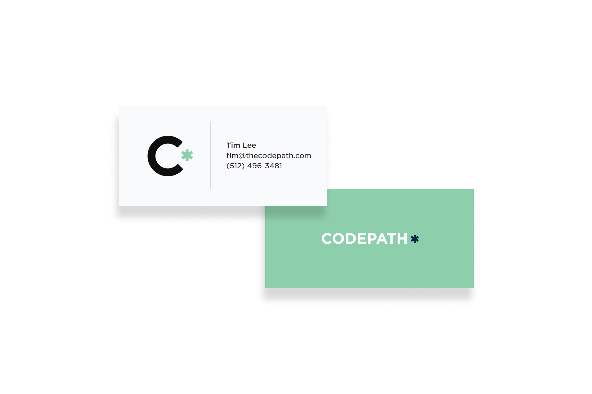
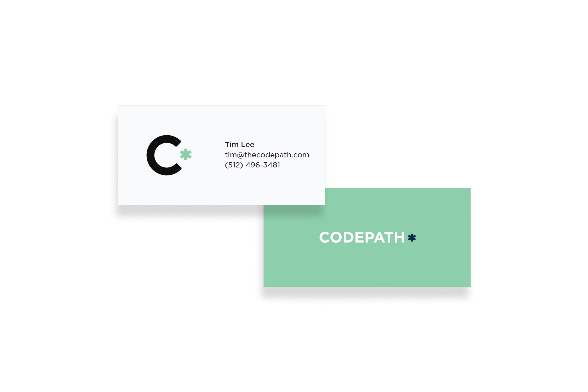

I worked with the Carousel team on user interface ideas for sharing and navigating photos.
Speed scroller Lightbox iPadSimple notes app based on the insight that typing is the fastest way to open a note or take a new one. I also developed a working prototype in Swift.
Hybrid input box Pull to createMobile prototyping for user interface ideas around search, discovery and input
Tokenized search Voice input iPadA tool to facilitate turn based collaboration and reduce conflicted copies.
Viewer Editor Multiple editors B-reelA mix of past work.
Art direction Oliver Munday Time magazine, Art direction Oliver Munday
New York Times, Art direction Abbott Miller
Time magazine, Art direction Oliver Munday
New York Times, Art direction Abbott Miller
 New York Times, Art direction Abbott Miller
Codepath identity

Codepath business card
New York Times, Art direction Abbott Miller
Codepath identity

Codepath business card